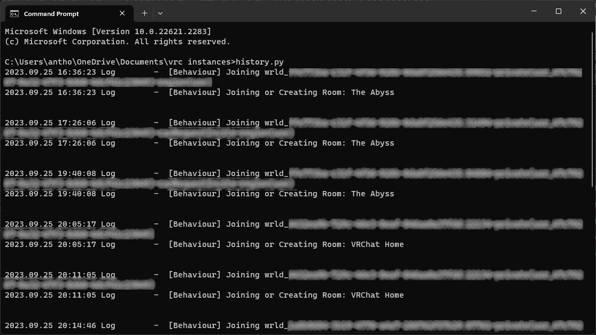

VRChat Instance History Outdated
Older versions of instance history
V3.2.py (4KB) Use this if you already have python installed, First attempt at adding style by Claude 2. Never released
V3.py (4KB) Use this if you already have python installed
V3.exe (5.3MB) comes with python in the folder with no install needed. Generated with PyInstaller. This folder is compressed as .7z
V2.py (3KB) Use this if you already have python installed, just V3 but before "the link update" Never released
V2 Screenshot.py (2KB) Use this if you already have python installed, this was for example screenshots only to avoid sharing world info. Never released
V1.5.py (2KB) First test of creating an html page. never released
V1.py (1KB) Original python script. no html, just outputs the raw joined world info. never released
Images below
V3
V2 Screenshot
V1
